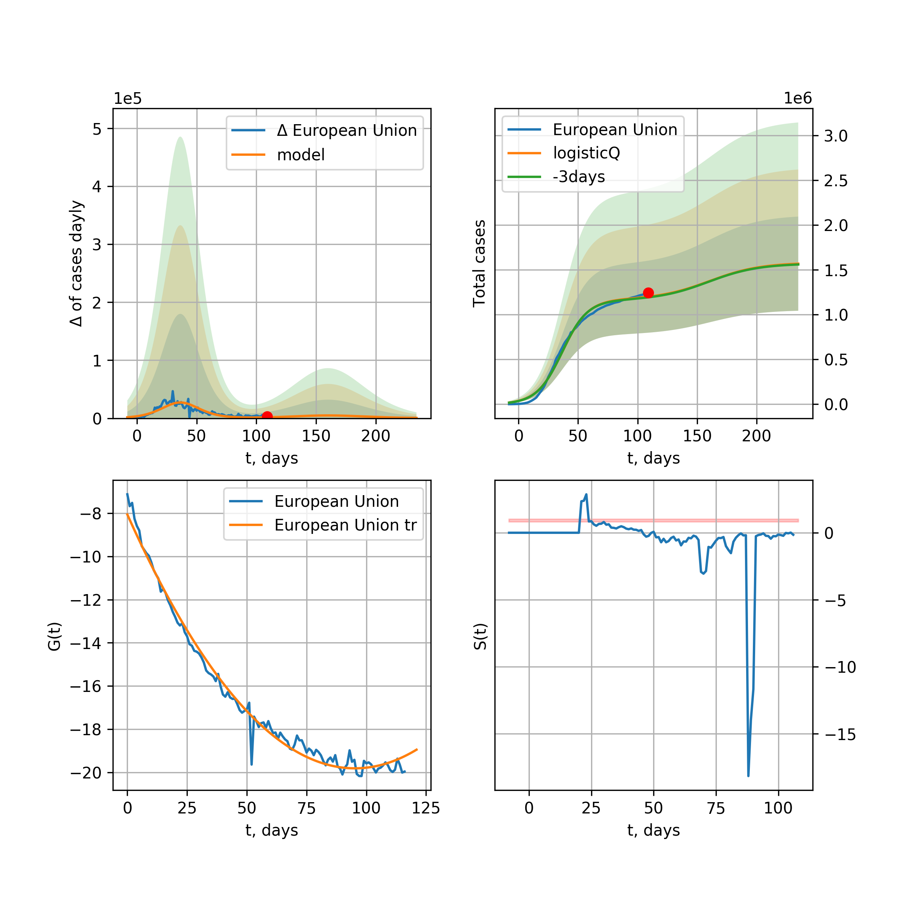

Multi-logistic model of COVID-19 dynamics
Model, code, results
Project maintained by algmaknick Hosted on GitHub Pages — Theme by mattgraham
World

World data at: 2020-06-06
+3 day model MAPE: 0.010770
model: bi-Richards
coeffs: [ 6.38443190e+06 2.97011729e+00 -2.82345949e+01 1.34531308e-02]
S.Korea scenario coeffs: [0.36242246, 2.56241634, 1.84890887, 0.13324732]
rational stdev: 0.088752
forecast at the end of period: +560 days
deltaDaycases: 1378
total cases: 13698140 ± 1215739
total death: 789128 ± 210110
bi-Richards approximation splitting point: 50
trend coefficient of determination: 0.839763
intercept: -2.273926
slope: -0.033302
trend coefficient of determination: 0.364886
intercept: -3.599715
slope: -0.007999
European Union

European Union data at: 2020-06-06
+3 day model MAPE: 0.006979
model: logisticQ
coeffs: [ 1.13176670e+06 3.78150479e-07 3.57271366e+01 -2.64492217e+05]
S.Korea scenario coeffs: [0.35416971, 0.02606324, 4.35859408, 19.30413219]
rational stdev: 0.340513
forecast at the end of period: +140 days
deltaDaycases: 368
total cases: 1525321 ± 519391
total death: 164300 ± 167838
trend coefficient of determination: 0.988467
intercept_: -7.8701631198074296
coeffs_: [ 0. -0.26105502 0.00145912]
Brazil

Brazil data at: 2020-06-06
+3 day model MAPE: 0.024522
model: logisticQ
coeffs: [ 1.50081769e+06 5.19392953e-06 9.11569594e+01 -1.35591533e+04]
S.Korea scenario coeffs: [0.35416971, 0.02606324, 4.35859408, 19.30413219]
rational stdev: 0.386401
forecast at the end of period: +420 days
deltaDaycases: 363
total cases: 2022116 ± 781346
total death: 107739 ± 124891
trend coefficient of determination: 0.903155
intercept_: -4.516037449372356
coeffs_: [ 0. -0.24985109 0.00136375]

Brazil data at: 2020-06-06
+3 day model MAPE: 0.004699
model: Richards
coeffs: [1.16209126e+07 1.82996339e-01 1.92386355e+01 9.68201978e-02]
S.Korea scenario coeffs: [0.36242246, 2.56241634, 1.84890887, 0.13324732]
rational stdev: 0.332201
forecast at the end of period: +1050 days
deltaDaycases: 2325
total cases: 15428938 ± 5125505
total death: 822062 ± 819268
trend coefficient of determination: 0.225351
intercept: -2.582896
slope: -0.021644
Russia

Russia data at: 2020-06-06
+3 day model MAPE: 0.014254
model: Richards
coeffs: [ 6.26421756e+05 5.41681967e-01 -6.25678565e+00 8.61963090e-02]
S.Korea scenario coeffs: [0.36242246, 2.56241634, 1.84890887, 0.13324732]
rational stdev: 0.195710
forecast at the end of period: +350 days
deltaDaycases: 298
total cases: 834021 ± 163226
total death: 10409 ± 6111
trend coefficient of determination: 0.975266
intercept: -2.021518
slope: -0.041059
USA

USA data at: 2020-06-06
+3 day model MAPE: 0.012775
model: Richards
coeffs: [ 2.27234421e+06 3.97106719e+00 -7.94139254e+01 9.91058023e-03]
S.Korea scenario coeffs: [0.36242246, 2.56241634, 1.84890887, 0.13324732]
rational stdev: 0.328542
forecast at the end of period: +462 days
deltaDaycases: 721
total cases: 3040615 ± 998970
total death: 171402 ± 168938
trend coefficient of determination: 0.943396
intercept: -1.331882
slope: -0.042017
Spain

Spain data at: 2020-06-06
+3 day model MAPE: 0.000740
model: Richards
coeffs: [ 2.93112211e+05 7.19535583e+00 -4.92404984e+01 8.48196355e-03]
S.Korea scenario coeffs: [0.36242246, 2.56241634, 1.84890887, 0.13324732]
rational stdev: 0.242938
forecast at the end of period: +280 days
deltaDaycases: 118
total cases: 393568 ± 95612
total death: 37031 ± 26988
trend coefficient of determination: 0.961599
intercept: -0.692972
slope: -0.061871
Italy

Italy data at: 2020-06-06
+3 day model MAPE: 0.000815
model: Richards
coeffs: [ 2.37241679e+05 6.58261772e+00 -5.33656642e+01 9.00745941e-03]
S.Korea scenario coeffs: [0.36242246, 2.56241634, 1.84890887, 0.13324732]
rational stdev: 0.073371
forecast at the end of period: +252 days
deltaDaycases: 156
total cases: 315155 ± 23123
total death: 45428 ± 9999
trend coefficient of determination: 0.985211
intercept: -1.084921
slope: -0.056835
United Kingdom

United Kingdom data at: 2020-06-06
+3 day model MAPE: 0.001122
model: Richards
coeffs: [ 3.16449377e+05 3.86540552e+00 -6.15690378e+01 1.20469971e-02]
S.Korea scenario coeffs: [0.36242246, 2.56241634, 1.84890887, 0.13324732]
rational stdev: 0.138105
forecast at the end of period: +350 days
deltaDaycases: 177
total cases: 419425 ± 57924
total death: 59578 ± 24684
trend coefficient of determination: 0.968620
intercept: -1.385074
slope: -0.045600
France

France data at: 2020-06-06
+3 day model MAPE: 0.005532
model: Richards
coeffs: [ 1.48265221e+05 2.16705647e+00 -7.55630240e+00 3.84685248e-02]
S.Korea scenario coeffs: [0.36242246, 2.56241634, 1.84890887, 0.13324732]
rational stdev: 679.329142
forecast at the end of period: +112 days
deltaDaycases: 381
total cases: 186073 ± 126404955
total death: 35295 ± 71930766
trend coefficient of determination: 0.723404
intercept: -1.371575
slope: -0.055773
Germany

Germany data at: 2020-06-06
+3 day model MAPE: 0.003522
model: Richards
coeffs: [ 1.81686213e+05 1.07568604e+01 -4.64719125e+01 7.20800299e-03]
S.Korea scenario coeffs: [0.36242246, 2.56241634, 1.84890887, 0.13324732]
rational stdev: 0.240670
forecast at the end of period: +182 days
deltaDaycases: 146
total cases: 241795 ± 58192
total death: 11418 ± 8243
trend coefficient of determination: 0.951275
intercept: -1.319933
slope: -0.061421
Turkey

Turkey data at: 2020-06-06
+3 day model MAPE: 0.007314
model: Richards
coeffs: [ 1.68773934e+05 8.86927544e+00 -4.72171912e+01 7.47255638e-03]
S.Korea scenario coeffs: [0.36242246, 2.56241634, 1.84890887, 0.13324732]
rational stdev: 0.276577
forecast at the end of period: +196 days
deltaDaycases: 287
total cases: 215466 ± 59593
total death: 5945 ± 4932
trend coefficient of determination: 0.825265
intercept: -1.049097
slope: -0.054264
Iran

Iran data at: 2020-06-06
+3 day model MAPE: 0.021275
model: bi-Richards
coeffs: [1.36950571e+05 4.30836120e+00 3.66944639e+00 1.15015557e-02]
S.Korea scenario coeffs: [0.36242246, 2.56241634, 1.84890887, 0.13324732]
rational stdev: 0.288029
forecast at the end of period: +294 days
deltaDaycases: 308
total cases: 258987 ± 74595
total death: 12548 ± 10842
bi-Richards approximation splitting point: 75
trend coefficient of determination: 0.949244
intercept: -0.914990
slope: -0.055143
trend coefficient of determination: 0.169053
intercept: -4.801937
slope: 0.005908
Canada

Canada data at: 2020-06-06
+3 day model MAPE: 0.001532
model: Richards
coeffs: [ 1.10108792e+05 3.27913421e+00 -7.20123559e+01 1.28601258e-02]
S.Korea scenario coeffs: [0.36242246, 2.56241634, 1.84890887, 0.13324732]
rational stdev: 0.174407
forecast at the end of period: +420 days
deltaDaycases: 36
total cases: 147394 ± 25706
total death: 12052 ± 6305
trend coefficient of determination: 0.970423
intercept: -1.585638
slope: -0.043906
Belgium

Belgium data at: 2020-06-06
+3 day model MAPE: 0.001647
model: Richards
coeffs: [ 5.94759632e+04 4.44421823e+00 -3.84831877e+01 1.51435344e-02]
S.Korea scenario coeffs: [0.36242246, 2.56241634, 1.84890887, 0.13324732]
rational stdev: 0.715251
forecast at the end of period: +182 days
deltaDaycases: 86
total cases: 76879 ± 54987
total death: 12467 ± 26751
trend coefficient of determination: 0.955234
intercept: -1.238864
slope: -0.058502
Peru

Peru data at: 2020-06-06
+3 day model MAPE: 0.002446
model: Richards
coeffs: [ 7.30302105e+05 9.92512724e-01 -7.07805068e+01 2.28094784e-02]
S.Korea scenario coeffs: [0.36242246, 2.56241634, 1.84890887, 0.13324732]
rational stdev: 0.305451
forecast at the end of period: +770 days
deltaDaycases: 285
total cases: 954988 ± 291702
total death: 26399 ± 24190
trend coefficient of determination: 0.702593
intercept: -1.556475
slope: -0.026665
Netherlands

Netherlands data at: 2020-06-06
+3 day model MAPE: 0.006451
model: bi-Richards
coeffs: [1.83890318e+03 3.18153442e+01 4.88385249e+01 5.01928639e-03]
rational stdev: 0.141753
forecast at the end of period: +42 days
deltaDaycases: 1
total cases: 48150 ± 6825
total death: 6114 ± 2600
bi-Richards approximation splitting point: 75
trend coefficient of determination: 0.959336
intercept: -0.790942
slope: -0.061553
trend coefficient of determination: 0.060741
intercept: -4.795241
slope: -0.010449
India

India data at: 2020-06-06
+3 day model MAPE: 0.006995
model: Richards
coeffs: [ 4.00519718e+06 3.41678281e-01 -3.98861456e+01 4.52045878e-02]
S.Korea scenario coeffs: [0.36242246, 2.56241634, 1.84890887, 0.13324732]
rational stdev: 0.376453
forecast at the end of period: +1050 days
deltaDaycases: 1602
total cases: 5107334 ± 1922673
total death: 143602 ± 162178
trend coefficient of determination: 0.628275
intercept: -1.847640
slope: -0.021349
Switzerland

Switzerland data at: 2020-06-06
+3 day model MAPE: 0.001394
model: logisticQ
coeffs: [ 3.02731492e+04 6.21547813e-07 2.61411820e+01 -2.27464582e+05]
S.Korea scenario coeffs: [0.35416971, 0.02606324, 4.35859408, 19.30413219]
rational stdev: 0.326706
forecast at the end of period: +70 days
deltaDaycases: 21
total cases: 40698 ± 13296
total death: 2525 ± 2474
trend coefficient of determination: 0.981310
intercept_: -4.097246289591906
coeffs_: [ 0. -0.29088339 0.0015537 ]
Ecuador

Ecuador data at: 2020-06-06
+3 day model MAPE: 0.002274
model: Richards
coeffs: [ 5.50526294e+04 1.48459490e+00 -5.34982026e+01 2.38186897e-02]
S.Korea scenario coeffs: [0.36242246, 2.56241634, 1.84890887, 0.13324732]
rational stdev: 0.341967
forecast at the end of period: +630 days
deltaDaycases: 3
total cases: 74687 ± 25540
total death: 6306 ± 6469
trend coefficient of determination: 0.204661
intercept: -2.119427
slope: -0.038071
Portugal

Portugal data at: 2020-06-06
+3 day model MAPE: 0.010098
model: bi-Richards
coeffs: [ 1.84529594e+04 3.24316844e+00 -2.88590140e+01 1.15229388e-02]
rational stdev: 1.312340
forecast at the end of period: +210 days
deltaDaycases: 0
total cases: 46613 ± 61172
total death: 2000 ± 7874
bi-Richards approximation splitting point: 61
trend coefficient of determination: 0.881284
intercept: -0.736577
slope: -0.064494
trend coefficient of determination: 0.003115
intercept: -5.095944
slope: 0.002145
Saudi Arabia

Saudi Arabia data at: 2020-06-06
+3 day model MAPE: 0.005033
model: Richards
coeffs: [1.43084003e+05 1.28695569e-01 5.21929883e+01 4.01082757e-01]
S.Korea scenario coeffs: [0.36242246, 2.56241634, 1.84890887, 0.13324732]
rational stdev: 0.289067
forecast at the end of period: +308 days
deltaDaycases: 80
total cases: 190152 ± 54966
total death: 1300 ± 1127
trend coefficient of determination: 0.668293
intercept: -3.590807
slope: -0.054358
Sweden

Sweden data at: 2020-06-06
+3 day model MAPE: 0.033716
model: Richards
coeffs: [ 5.95619209e+04 2.83563699e+00 -1.03828060e+02 9.94475912e-03]
S.Korea scenario coeffs: [0.36242246, 2.56241634, 1.84890887, 0.13324732]
rational stdev: 0.290884
forecast at the end of period: +420 days
deltaDaycases: 75
total cases: 68859 ± 20030
total death: 7305 ± 6374
trend coefficient of determination: 0.795146
intercept: -1.506743
slope: -0.031692
Pakistan

Pakistan data at: 2020-06-06
+3 day model MAPE: 0.041664
model: Richards
coeffs: [ 2.09678548e+06 3.38892158e-01 -6.79678035e+01 3.82564636e-02]
S.Korea scenario coeffs: [0.36242246, 2.56241634, 1.84890887, 0.13324732]
rational stdev: 0.370220
forecast at the end of period: +1190 days
deltaDaycases: 882
total cases: 2613617 ± 967613
total death: 52883 ± 58735
trend coefficient of determination: 0.333274
intercept: -2.234780
slope: -0.015939
Ireland

Ireland data at: 2020-06-06
+3 day model MAPE: 0.003088
model: logisticQ
coeffs: [ 2.47213670e+04 1.07158283e-06 3.58439891e+01 -1.12813950e+05]
S.Korea scenario coeffs: [0.35416971, 0.02606324, 4.35859408, 19.30413219]
rational stdev: 0.305029
forecast at the end of period: +112 days
deltaDaycases: 35
total cases: 32872 ± 10027
total death: 2190 ± 2004
trend coefficient of determination: 0.979699
intercept_: -4.085424116287204
coeffs_: [ 0. -0.24612306 0.00119464]
Mexico

Mexico data at: 2020-06-06
+3 day model MAPE: 0.009350
model: Richards
coeffs: [ 6.67111608e+05 4.92759291e-01 -5.93394572e+01 4.02159261e-02]
S.Korea scenario coeffs: [0.36242246, 2.56241634, 1.84890887, 0.13324732]
rational stdev: 0.178977
forecast at the end of period: +910 days
deltaDaycases: 168
total cases: 882501 ± 157947
total death: 104942 ± 56346
trend coefficient of determination: 0.887385
intercept: -2.035356
slope: -0.024587
Singapore

Singapore data at: 2020-06-06
+3 day model MAPE: 0.024046
model: bi-Richards
coeffs: [ 3.07016491e+04 6.58663420e+00 -2.13873426e+00 7.96607072e-03]
S.Korea scenario coeffs: [0.36242246, 2.56241634, 1.84890887, 0.13324732]
rational stdev: 0.259057
forecast at the end of period: +350 days
deltaDaycases: 28
total cases: 49387 ± 12794
total death: 32 ± 24
bi-Richards approximation splitting point: 60
trend coefficient of determination: 0.125326
intercept: -2.319212
slope: -0.021621
trend coefficient of determination: 0.720365
intercept: -0.139120
slope: -0.032461
Chile

Chile data at: 2020-06-06
+3 day model MAPE: 0.043289
model: bi-Richards
coeffs: [1.53575580e+05 6.78641813e-02 7.59493323e+01 2.78506824e+00]
S.Korea scenario coeffs: [0.36242246, 2.56241634, 1.84890887, 0.13324732]
rational stdev: 0.276163
forecast at the end of period: +140 days
deltaDaycases: 69
total cases: 210965 ± 58260
total death: 2544 ± 2107
bi-Richards approximation splitting point: 12
trend coefficient of determination: 0.556155
intercept: -14.133425
slope: -0.743974
trend coefficient of determination: 0.974868
intercept: -22.009638
slope: -0.169246
Israel

Israel data at: 2020-06-06
+3 day model MAPE: 0.017843
model: bi-Richards
coeffs: [1.29719135e+03 1.10232387e+01 6.16095350e+01 2.59927411e-02]
rational stdev: 0.143032
forecast at the end of period: +14 days
deltaDaycases: 5
total cases: 18322 ± 2620
total death: 306 ± 131
bi-Richards approximation splitting point: 70
trend coefficient of determination: 0.930299
intercept: -1.100460
slope: -0.093210
trend coefficient of determination: 0.490813
intercept: -18.032362
slope: 0.155039
Austria

Austria data at: 2020-06-06
+3 day model MAPE: 0.002912
model: logisticQ
coeffs: [ 1.59240895e+04 5.41811737e-07 2.41915271e+01 -3.21244629e+05]
S.Korea scenario coeffs: [0.35416971, 0.02606324, 4.35859408, 19.30413219]
rational stdev: 0.321121
forecast at the end of period: +56 days
deltaDaycases: 10
total cases: 21442 ± 6885
total death: 852 ± 820
trend coefficient of determination: 0.972975
intercept_: -3.127144224756565
coeffs_: [ 0. -0.32405179 0.00200334]
Belarus

Belarus data at: 2020-06-06
+3 day model MAPE: 0.008151
model: Richards
coeffs: [ 6.96451476e+04 2.52712737e+00 -7.21120033e+01 1.54215205e-02]
S.Korea scenario coeffs: [0.36242246, 2.56241634, 1.84890887, 0.13324732]
rational stdev: 0.168129
forecast at the end of period: +350 days
deltaDaycases: 84
total cases: 87303 ± 14678
total death: 480 ± 242
trend coefficient of determination: 0.918607
intercept: -1.703138
slope: -0.040081
Japan

Japan data at: 2020-06-06
+3 day model MAPE: 0.004231
model: Richards
coeffs: [1.67205951e+04 1.19044006e-01 7.59197715e+01 1.01527839e+00]
S.Korea scenario coeffs: [0.36242246, 2.56241634, 1.84890887, 0.13324732]
rational stdev: 1.553773
forecast at the end of period: +140 days
deltaDaycases: 9
total cases: 22554 ± 35044
total death: 1205 ± 5616
trend coefficient of determination: 0.758035
intercept: -5.831741
slope: -0.080075
Qatar

Qatar data at: 2020-06-06
+3 day model MAPE: 0.012440
model: Richards
coeffs: [1.98444163e+05 2.07807266e-01 1.20525428e+01 1.38014245e-01]
S.Korea scenario coeffs: [0.36242246, 2.56241634, 1.84890887, 0.13324732]
rational stdev: 0.382116
forecast at the end of period: +924 days
deltaDaycases: 2
total cases: 270093 ± 103207
total death: 204 ± 233
trend coefficient of determination: 0.254334
intercept: -3.618369
slope: -0.013701
Poland

Poland data at: 2020-06-06
+3 day model MAPE: 0.013347
model: Richards
coeffs: [ 3.42424094e+04 3.37646712e+00 -1.00824258e+02 9.26823362e-03]
S.Korea scenario coeffs: [0.36242246, 2.56241634, 1.84890887, 0.13324732]
rational stdev: 0.333975
forecast at the end of period: +490 days
deltaDaycases: 24
total cases: 44057 ± 14713
total death: 1954 ± 1957
trend coefficient of determination: 0.804671
intercept: -1.432159
slope: -0.036143
UAE

UAE data at: 2020-06-06
+3 day model MAPE: 0.007391
model: Richards
coeffs: [ 7.65776726e+04 1.28201389e+00 -9.21547211e+01 2.11346778e-02]
S.Korea scenario coeffs: [0.36242246, 2.56241634, 1.84890887, 0.13324732]
rational stdev: 0.164461
forecast at the end of period: +644 days
deltaDaycases: 24
total cases: 101564 ± 16703
total death: 729 ± 359
trend coefficient of determination: 0.890866
intercept: -2.065862
slope: -0.032445
Romania

Romania data at: 2020-06-06
+3 day model MAPE: 0.006062
model: Richards
coeffs: [ 2.21464030e+04 4.72466971e+00 -6.66508877e+01 9.58228390e-03]
S.Korea scenario coeffs: [0.36242246, 2.56241634, 1.84890887, 0.13324732]
rational stdev: 0.206723
forecast at the end of period: +322 days
deltaDaycases: 21
total cases: 28614 ± 5915
total death: 1864 ± 1155
trend coefficient of determination: 0.923960
intercept: -1.321638
slope: -0.043004
Ukraine

Ukraine data at: 2020-06-06
+3 day model MAPE: 0.017587
model: Richards
coeffs: [ 3.36087869e+04 2.95389049e+00 -6.54384050e+01 1.34906839e-02]
S.Korea scenario coeffs: [0.36242246, 2.56241634, 1.84890887, 0.13324732]
rational stdev: 0.216760
forecast at the end of period: +350 days
deltaDaycases: 39
total cases: 42363 ± 9182
total death: 1241 ± 806
trend coefficient of determination: 0.754462
intercept: -1.467489
slope: -0.037606
Indonesia

Indonesia data at: 2020-06-06
+3 day model MAPE: 0.007301
model: Richards
coeffs: [ 9.20328170e+04 1.11679415e+00 -1.33847298e+02 1.69517578e-02]
S.Korea scenario coeffs: [0.36242246, 2.56241634, 1.84890887, 0.13324732]
rational stdev: 0.219049
forecast at the end of period: +938 days
deltaDaycases: 24
total cases: 121376 ± 26587
total death: 7163 ± 4707
trend coefficient of determination: 0.804236
intercept: -2.049528
slope: -0.026789
Bangladesh

Bangladesh data at: 2020-06-06
+3 day model MAPE: 0.017456
model: bi-Richards
coeffs: [ 7.26789348e+05 6.26642230e-01 -6.24973614e+01 2.88386985e-02]
S.Korea scenario coeffs: [0.36242246, 2.56241634, 1.84890887, 0.13324732]
rational stdev: 0.401772
forecast at the end of period: +938 days
deltaDaycases: 303
total cases: 935015 ± 375662
total death: 12550 ± 15126
bi-Richards approximation splitting point: 29
trend coefficient of determination: 0.033948
intercept: -4.305097
slope: 0.051022
trend coefficient of determination: 0.802994
intercept: -0.987252
slope: -0.030750
South_Korea

South Korea data at: 2020-06-06
+3 day model MAPE: 0.007932
model: bi-Richards
coeffs: [ 2.82679077e+03 2.66953057e+00 -7.76710849e+01 9.96449247e-03]
rational stdev: 0.168664
forecast at the end of period: +56 days
deltaDaycases: 11
total cases: 12769 ± 2153
total death: 296 ± 149
bi-Richards approximation splitting point: 73
trend coefficient of determination: 0.865846
intercept: -1.350249
slope: -0.089538
trend coefficient of determination: 0.507093
intercept: -11.209382
slope: 0.053174
Denmark

Denmark data at: 2020-06-06
+3 day model MAPE: 0.002360
model: Richards
coeffs: [ 1.22844544e+04 8.19865706e-01 -2.36122679e+01 6.51063142e-02]
S.Korea scenario coeffs: [0.36242246, 2.56241634, 1.84890887, 0.13324732]
rational stdev: 0.281818
forecast at the end of period: +252 days
deltaDaycases: 7
total cases: 16289 ± 4590
total death: 801 ± 677
trend coefficient of determination: 0.907497
intercept: -1.820044
slope: -0.050792
Serbia

Serbia data at: 2020-06-06
+3 day model MAPE: 0.017027
model: bi-Richards
coeffs: [2.58560791e+03 1.03449750e+00 6.38431917e-03 4.34926395e-02]
rational stdev: 0.136316
forecast at the end of period: +42 days
deltaDaycases: 10
total cases: 12682 ± 1728
total death: 267 ± 109
bi-Richards approximation splitting point: 50
trend coefficient of determination: 0.717550
intercept: -1.317972
slope: -0.052982
trend coefficient of determination: 0.523290
intercept: -2.571278
slope: -0.042247
Kuwait

Kuwait data at: 2020-06-06
+3 day model MAPE: 0.015791
model: bi-Richards
coeffs: [3.52263176e+04 2.68887749e-01 6.52555259e+01 3.18417871e-01]
S.Korea scenario coeffs: [0.36242246, 2.56241634, 1.84890887, 0.13324732]
rational stdev: 0.172038
forecast at the end of period: +189 days
deltaDaycases: 61
total cases: 48861 ± 8406
total death: 398 ± 205
bi-Richards approximation splitting point: 24
trend coefficient of determination: 0.007999
intercept: -4.266939
slope: -0.021844
trend coefficient of determination: 0.633138
intercept: -3.484096
slope: -0.031114
Philippines

Philippines data at: 2020-06-06
+3 day model MAPE: 0.062659
model: Richards
coeffs: [ 4.68751855e+04 1.65483839e+00 -1.65994887e+02 1.13578755e-02]
S.Korea scenario coeffs: [0.36242246, 2.56241634, 1.84890887, 0.13324732]
rational stdev: 0.359468
forecast at the end of period: +756 days
deltaDaycases: 30
total cases: 57883 ± 20807
total death: 2696 ± 2907
trend coefficient of determination: 0.554090
intercept: -1.949905
slope: -0.029619
Norway

Norway data at: 2020-06-06
+3 day model MAPE: 0.002006
model: Richards
coeffs: [ 8.41963234e+03 7.00969471e+00 -4.21288934e+01 1.04849438e-02]
S.Korea scenario coeffs: [0.36242246, 2.56241634, 1.84890887, 0.13324732]
rational stdev: 0.174061
forecast at the end of period: +182 days
deltaDaycases: 7
total cases: 11175 ± 1945
total death: 311 ± 162
trend coefficient of determination: 0.928913
intercept: -1.049888
slope: -0.064348
Czechia

Czechia data at: 2020-06-06
+3 day model MAPE: 0.001432
model: bi-Richards
coeffs: [2.66358158e+03 2.50086267e+00 1.95965188e+00 2.11760590e-02]
rational stdev: 1.084499
forecast at the end of period: +70 days
deltaDaycases: 1
total cases: 10539 ± 11430
total death: 360 ± 1171
bi-Richards approximation splitting point: 59
trend coefficient of determination: 0.409103
intercept: -1.503923
slope: -0.055721
trend coefficient of determination: 0.015575
intercept: -4.998094
slope: -0.004942
Colombia

Colombia data at: 2020-06-06
+3 day model MAPE: 0.027644
model: bi-Richards
coeffs: [ 1.79566961e+05 1.17300959e+00 -4.19345576e+01 2.26205113e-02]
S.Korea scenario coeffs: [0.36242246, 2.56241634, 1.84890887, 0.13324732]
rational stdev: 0.192138
forecast at the end of period: +700 days
deltaDaycases: 72
total cases: 241126 ± 46329
total death: 7640 ± 4403
bi-Richards approximation splitting point: 40
trend coefficient of determination: 0.750048
intercept: -1.040226
slope: -0.064524
trend coefficient of determination: 0.124658
intercept: -3.011290
slope: -0.004374
Australia

Australia data at: 2020-06-06
+3 day model MAPE: 0.001696
model: bi-Richards
coeffs: [ 1.03783294e+03 6.11096464e+00 -4.40918940e+01 8.58959430e-03]
S.Korea scenario coeffs: [0.36242246, 2.56241634, 1.84890887, 0.13324732]
rational stdev: 0.713873
forecast at the end of period: +42 days
deltaDaycases: 0
total cases: 7324 ± 5228
total death: 102 ± 218
bi-Richards approximation splitting point: 50
trend coefficient of determination: 0.756269
intercept: -0.979531
slope: -0.083637
trend coefficient of determination: 0.122085
intercept: -5.407347
slope: -0.014827
Malaysia

Malaysia data at: 2020-06-06
+3 day model MAPE: 0.016175
model: bi-Richards
coeffs: [ 5.08468662e+03 2.50798349e+00 -7.63715818e+00 1.62105570e-02]
S.Korea scenario coeffs: [0.36242246, 2.56241634, 1.84890887, 0.13324732]
rational stdev: 0.150925
forecast at the end of period: +140 days
deltaDaycases: 0
total cases: 11623 ± 1754
total death: 163 ± 73
bi-Richards approximation splitting point: 70
trend coefficient of determination: 0.336357
intercept: -1.848550
slope: -0.045279
trend coefficient of determination: 0.000477
intercept: -5.070621
slope: -0.001905
Dominican Republic

Dominican Republic data at: 2020-06-06
+3 day model MAPE: 0.002578
model: Richards
coeffs: [ 3.55865811e+04 7.36324334e-01 -7.83039844e+01 3.50586951e-02]
S.Korea scenario coeffs: [0.36242246, 2.56241634, 1.84890887, 0.13324732]
rational stdev: 0.161128
forecast at the end of period: +644 days
deltaDaycases: 11
total cases: 47124 ± 7593
total death: 1315 ± 635
trend coefficient of determination: 0.740655
intercept: -2.225146
slope: -0.032104
Egypt

Egypt data at: 2020-06-06
+3 day model MAPE: 0.001050
model: logisticQ
coeffs: [ 2.68903030e+05 1.18921017e-05 1.09474197e+02 -4.37190893e+03]
S.Korea scenario coeffs: [0.35416971, 0.02606324, 4.35859408, 19.30413219]
rational stdev: 0.237183
forecast at the end of period: +525 days
deltaDaycases: 99
total cases: 360253 ± 85446
total death: 13233 ± 9415
trend coefficient of determination: 0.970144
intercept_: -7.632902028705634
coeffs_: [ 0. -0.12375721 0.00066201]
Finland

Finland data at: 2020-06-06
+3 day model MAPE: 0.002368
model: Richards
coeffs: [ 7.49239873e+03 1.09323188e+00 -3.61461152e+01 4.42656570e-02]
S.Korea scenario coeffs: [0.36242246, 2.56241634, 1.84890887, 0.13324732]
rational stdev: 0.152066
forecast at the end of period: +322 days
deltaDaycases: 2
total cases: 10027 ± 1524
total death: 463 ± 211
trend coefficient of determination: 0.836267
intercept: -1.572886
slope: -0.054170
Morocco

Morocco data at: 2020-06-06
+3 day model MAPE: 0.006994
model: logisticQ
coeffs: [ 8.17619133e+03 8.14230628e-07 3.54044357e+01 -1.07628181e+05]
S.Korea scenario coeffs: [0.35416971, 0.02606324, 4.35859408, 19.30413219]
rational stdev: 0.267448
forecast at the end of period: +140 days
deltaDaycases: 7
total cases: 10885 ± 2911
total death: 277 ± 222
trend coefficient of determination: 0.968665
intercept_: -5.34028015059177
coeffs_: [ 0. -0.20106668 0.00117171]
Argentina

Argentina data at: 2020-06-06
+3 day model MAPE: 0.009750
model: Richards
coeffs: [1.62391831e+05 4.54430071e-02 1.13197468e+02 7.62528584e+00]
S.Korea scenario coeffs: [0.36242246, 2.56241634, 1.84890887, 0.13324732]
rational stdev: 0.197175
forecast at the end of period: +175 days
deltaDaycases: 115
total cases: 220307 ± 43439
total death: 6483 ± 3834
trend coefficient of determination: 0.928805
intercept: -52.589856
slope: -0.358603
Algeria

Algeria data at: 2020-06-06
+3 day model MAPE: 0.000807
model: logisticQ
coeffs: [ 1.21944035e+04 1.36213006e-06 4.86697524e+01 -4.48839361e+04]
S.Korea scenario coeffs: [0.35416971, 0.02606324, 4.35859408, 19.30413219]
rational stdev: 0.259003
forecast at the end of period: +196 days
deltaDaycases: 16
total cases: 15890 ± 4115
total death: 1103 ± 857
trend coefficient of determination: 0.950025
intercept_: -6.788705377666811
coeffs_: [ 0. -0.15191021 0.00088394]
Luxembourg

Luxembourg data at: 2020-06-06
+3 day model MAPE: 0.002264
model: Richards
coeffs: [ 3.94167224e+03 2.23937640e+01 -3.92389139e+01 4.72480907e-03]
S.Korea scenario coeffs: [0.36242246, 2.56241634, 1.84890887, 0.13324732]
rational stdev: 0.200528
forecast at the end of period: +126 days
deltaDaycases: 3
total cases: 5286 ± 1059
total death: 144 ± 86
trend coefficient of determination: 0.719863
intercept: -1.750878
slope: -0.068609
Thailand

Thailand data at: 2020-06-06
+3 day model MAPE: 0.000694
model: Richards
coeffs: [ 3.03441637e+03 1.66885262e+01 -4.02861270e+01 7.08295902e-03]
S.Korea scenario coeffs: [0.36242246, 2.56241634, 1.84890887, 0.13324732]
rational stdev: 0.090996
forecast at the end of period: +98 days
deltaDaycases: 2
total cases: 4075 ± 370
total death: 75 ± 20
trend coefficient of determination: 0.720733
intercept: -1.935381
slope: -0.088199
Hungary

Hungary data at: 2020-06-05
+3 day model MAPE: 0.004996
model: Richards
coeffs: [4.09153550e+03 3.80973724e-01 4.16284425e+00 1.66827831e-01]
S.Korea scenario coeffs: [0.36242246, 2.56241634, 1.84890887, 0.13324732]
rational stdev: 0.055551
forecast at the end of period: +183 days
deltaDaycases: 4
total cases: 5348 ± 297
total death: 730 ± 121
trend coefficient of determination: 0.936800
intercept: -1.903828
slope: -0.058599
Greece

Greece data at: 2020-06-06
+3 day model MAPE: 0.004102
model: logisticQ
coeffs: [ 2.82715215e+03 3.94088855e-07 2.54542027e+01 -2.68033574e+05]
S.Korea scenario coeffs: [0.35416971, 0.02606324, 4.35859408, 19.30413219]
rational stdev: 0.263643
forecast at the end of period: +70 days
deltaDaycases: 3
total cases: 3759 ± 991
total death: 227 ± 179
trend coefficient of determination: 0.925527
intercept_: -3.8644199953011373
coeffs_: [ 0. -0.24916273 0.00150632]
Iraq

Iraq data at: 2020-06-06
+3 day model MAPE: 0.125703
model: bi-Richards
coeffs: [1.13471435e+05 1.36510368e-01 9.69343494e+01 5.81061528e+00]
S.Korea scenario coeffs: [0.36242246, 2.56241634, 1.84890887, 0.13324732]
rational stdev: 0.110591
forecast at the end of period: +168 days
deltaDaycases: 0
total cases: 158348 ± 17511
total death: 4537 ± 1505
bi-Richards approximation splitting point: 15
trend coefficient of determination: 0.972106
intercept: -26.382851
slope: -0.780146
trend coefficient of determination: 0.939069
intercept: -38.120671
slope: -0.204578
Croatia

Croatia data at: 2020-06-05
+3 day model MAPE: 0.001791
model: logisticQ
coeffs: [ 2.20436780e+03 5.83987066e-07 2.75595240e+01 -2.25766953e+05]
S.Korea scenario coeffs: [0.35416971, 0.02606324, 4.35859408, 19.30413219]
rational stdev: 0.315956
forecast at the end of period: +85 days
deltaDaycases: 1
total cases: 2963 ± 936
total death: 135 ± 127
trend coefficient of determination: 0.961524
intercept_: -2.963256038896013
coeffs_: [ 0. -0.20894978 0.00066521]
Iceland

Iceland data at: 2020-05-30
+3 day model MAPE: 0.000117
model: logisticQ
coeffs: [ 1.80267683e+03 8.35445177e-06 1.33258395e+01 -2.11907264e+04]
rational stdev: 0.058147
forecast at the end of period: +21 days
deltaDaycases: 0
total cases: 1802 ± 104
total death: 9 ± 1
trend coefficient of determination: 0.933689
intercept_: -5.015116946837249
coeffs_: [ 0. -0.25356125 0.00122989]
Estonia

Estonia data at: 2020-06-06
+3 day model MAPE: 0.017523
model: bi-Richards
coeffs: [ 5.68619412e+02 1.70869088e+00 -1.41607949e+01 2.26634569e-02]
rational stdev: 0.109564
forecast at the end of period: +105 days
deltaDaycases: 0
total cases: 2306 ± 252
total death: 82 ± 26
bi-Richards approximation splitting point: 50
trend coefficient of determination: 0.744280
intercept: -1.680036
slope: -0.078102
trend coefficient of determination: 0.020182
intercept: -6.826335
slope: 0.011350
Bulgaria

Bulgaria data at: 2020-06-06
+3 day model MAPE: 0.007430
model: Richards
coeffs: [2.85104957e+03 7.71724625e-02 3.30516398e+01 8.49084055e-01]
S.Korea scenario coeffs: [0.36242246, 2.56241634, 1.84890887, 0.13324732]
rational stdev: 0.139306
forecast at the end of period: +350 days
deltaDaycases: 0
total cases: 3881 ± 540
total death: 229 ± 95
trend coefficient of determination: 0.864064
intercept: -6.420340
slope: -0.071661
New Zealand

New Zealand data at: 2020-05-28
+3 day model MAPE: 0.001125
model: logisticQ
coeffs: [ 1.48316442e+03 2.61946481e-06 2.50154651e+01 -9.24244019e+04]
S.Korea scenario coeffs: [0.35416971, 0.02606324, 4.35859408, 19.30413219]
rational stdev: 0.274300
forecast at the end of period: +79 days
deltaDaycases: 0
total cases: 2007 ± 550
total death: 29 ± 23
trend coefficient of determination: 0.902211
intercept_: -3.5729578368920185
coeffs_: [ 0. -0.17986227 0.00021014]
Slovenia

Slovenia data at: 2020-06-06
+3 day model MAPE: 0.006962
model: bi-Richards
coeffs: [ 5.77390643e+01 -4.10039131e-02 -5.16860129e+00 1.31131037e-02]
rational stdev: 0.195031
forecast at the end of period: +42 days
deltaDaycases: 0
total cases: 1488 ± 290
total death: 109 ± 63
bi-Richards approximation splitting point: 75
trend coefficient of determination: 0.903849
intercept: -0.789892
slope: -0.094866
trend coefficient of determination: 0.218921
intercept: -18.512070
slope: 0.122489
Slovakia

Slovakia data at: 2020-06-06
+3 day model MAPE: 0.001329
model: logisticQ
coeffs: [ 1.51080822e+03 2.61894739e-04 2.39998001e+01 -4.72066086e+02]
S.Korea scenario coeffs: [0.35416971, 0.02606324, 4.35859408, 19.30413219]
rational stdev: 0.225676
forecast at the end of period: +98 days
deltaDaycases: 0
total cases: 2040 ± 460
total death: 37 ± 25
trend coefficient of determination: 0.925910
intercept_: -3.655421910287462
coeffs_: [ 0. -0.23923361 0.00126794]
Lithuania

Lithuania data at: 2020-06-05
+3 day model MAPE: 0.000198
model: bi-Richards
coeffs: [2.71245409e+02 1.12608375e-01 6.14220826e+01 1.29585649e+00]
rational stdev: 0.157527
forecast at the end of period: +14 days
deltaDaycases: 0
total cases: 1719 ± 270
total death: 72 ± 34
bi-Richards approximation splitting point: 48
trend coefficient of determination: 0.874661
intercept: -5.650197
slope: -0.212329
trend coefficient of determination: 0.165794
intercept: -13.344599
slope: -0.023425
Latvia

Latvia data at: 2020-06-05
+3 day model MAPE: 0.005711
model: Richards
coeffs: [ 1.08610618e+03 9.42707673e+00 -7.35060419e+01 5.95592927e-03]
S.Korea scenario coeffs: [0.36242246, 2.56241634, 1.84890887, 0.13324732]
rational stdev: 0.247610
forecast at the end of period: +211 days
deltaDaycases: 1
total cases: 1366 ± 338
total death: 31 ± 23
trend coefficient of determination: 0.535544
intercept: -1.792409
slope: -0.052828
Cyprus

Cyprus data at: 2020-06-05
+3 day model MAPE: 0.004668
model: Richards
coeffs: [ 9.36314644e+02 7.39986740e-01 -9.12275508e+00 1.24809093e-01]
S.Korea scenario coeffs: [0.36242246, 2.56241634, 1.84890887, 0.13324732]
rational stdev: 0.146212
forecast at the end of period: +71 days
deltaDaycases: 2
total cases: 1179 ± 172
total death: 20 ± 8
trend coefficient of determination: 0.768607
intercept: -2.112571
slope: -0.071262
Malta

Malta data at: 2020-06-06
+3 day model MAPE: 0.003710
model: bi-Richards
coeffs: [1.60161397e+02 1.48744170e-01 6.50845845e+01 2.63751758e+00]
rational stdev: 0.210770
forecast at the end of period: +14 days
deltaDaycases: 0
total cases: 620 ± 130
total death: 8 ± 5
bi-Richards approximation splitting point: 50
trend coefficient of determination: 0.908903
intercept: -8.519791
slope: -0.312155
trend coefficient of determination: 0.403326
intercept: -17.122309
slope: -0.069928
Sri Lanka

Sri Lanka data at: 2020-06-06
+3 day model MAPE: 0.004232
model: Richards
coeffs: [ 1.36359730e+04 4.53897834e-01 -1.45259543e+02 2.88744724e-02]
S.Korea scenario coeffs: [0.36242246, 2.56241634, 1.84890887, 0.13324732]
rational stdev: 0.115409
forecast at the end of period: +1190 days
deltaDaycases: 4
total cases: 17378 ± 2005
total death: 105 ± 36
trend coefficient of determination: 0.011276
intercept: -3.685733
slope: -0.006324
References
- Worldometers COVID-19 Coronavirus Pandemic
- Su COVID-19 susijusi gyventojų ir verslo statistika
- Bi-logistic growth
- Least squares
- scikit-learn
- scipy.org
- European Centre for Disease Prevention and Control An agency of the European Union
- Aaron Miller, Mac Josh Reandelar, Kimberly Fasciglione, Violeta Roumenova, Yan Li, Gonzalo H Otazu, Correlation between universal BCG vaccination policy and reduced morbidity and mortality for COVID-19: an epidemiological study, https://doi.org/10.1101/2020.03.24.20042937